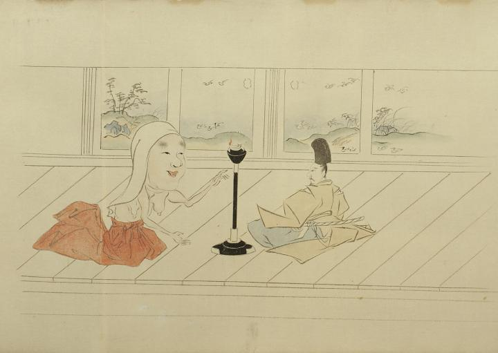

化物たちに次いで、頼光の前に一人の尼が現れた。灯りを消そうとしたので頼光が睨むと、尼はニコニコと笑い、雪や霞が消えるように去っていった。
出典：親書誌：U426_nichibunken_0056：土蜘蛛草紙；ツチグモソウシ／日付：2007／資源識別子：U426_nichibunken_0056_0003_0000
Copyright (c)2010- International Research Center for Japanese Studies, Kyoto, Japan. All rights reserved.